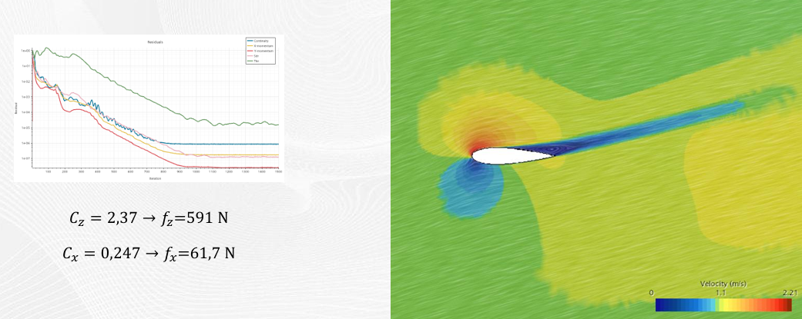
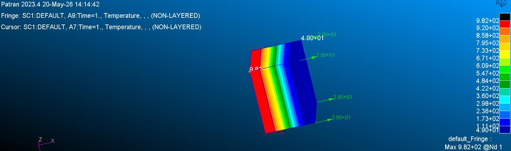
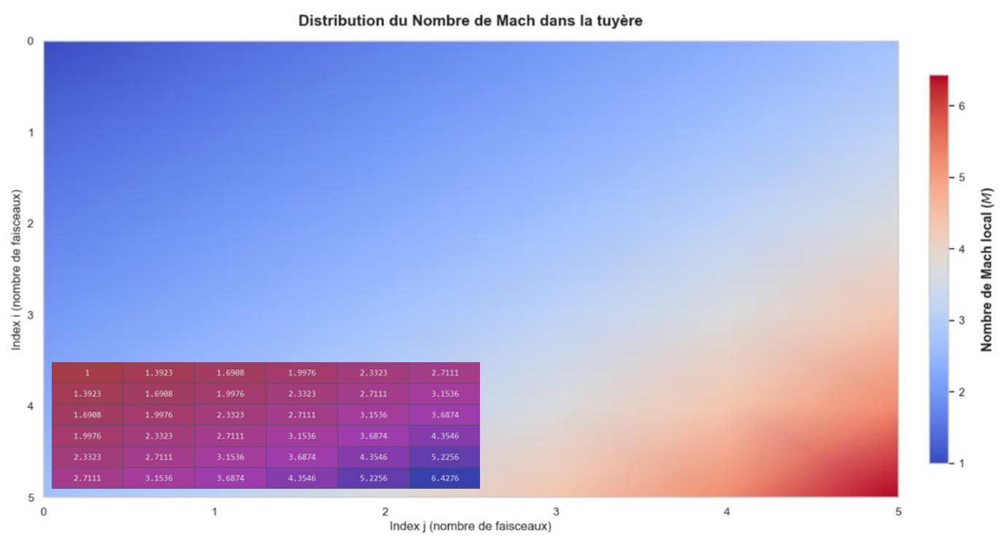
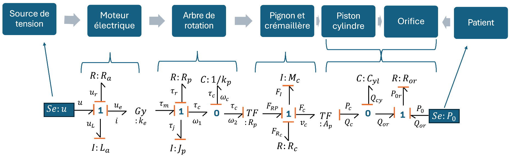
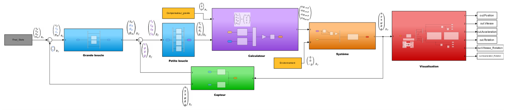
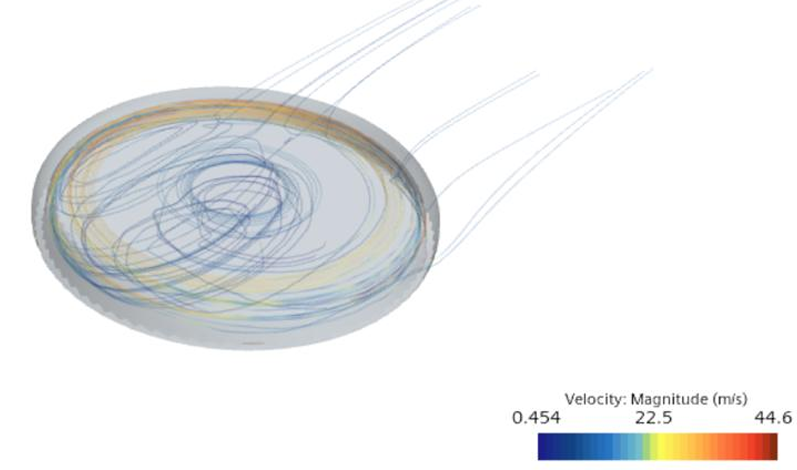

Ce projet s'intéresse au comportement aérodynamique d'un profil d'aile NACA 0020 soumis au phénomène de décrochage dynamique. L'objectif principal est de modéliser et de comprendre les instabilités d'écoulement, la formation des vortex et le comportement de la couche limite à travers des simulations numériques fluides (CFD).

Ce travail porte sur l'analyse numérique du comportement thermomécanique de structures sous contraintes de température et de charge. L'objectif est d'évaluer les déformations, les dilatations et la distribution des contraintes (Von Mises) afin de valider le dimensionnement structural d'éléments aérospatiaux.

Ce projet étudie le design et le comportement fluide d'une tuyère supersonique de type AeroSpike[cite: 3]. Ce concept innovant permet de maintenir des performances propulsives optimales à toutes les altitudes en adaptant naturally le faisceau de détente à la pression atmosphérique ambiante[cite: 3].

Ce projet explore la méthodologie Bond Graph, un langage graphique unifié permettant de modéliser, simuler et analyser des systèmes mécatroniques et multiphysiques complexes. L'approche repose sur le transfert d'énergie et de puissance entre différents domaines physiques (mécanique, électrique, hydraulique, thermique...).

Ce projet est centré sur la modélisation d'un système et de son asservissement sous MATLAB et Simulink. L'objectif est de garantir la stabilité, la rapidité et la précision de la réponse en boucle fermée face à des perturbations grâce a des PID.

Ce projet consiste en une analyse numérique d'écoulements fluides compressibles/incompressibles autour d'un frisbee. L'étude vise à comprendre explicitement le comportement de la couche limite, de la vitesse et la distribution des pressions en plus des autres phénomènes aérodynamiques.
